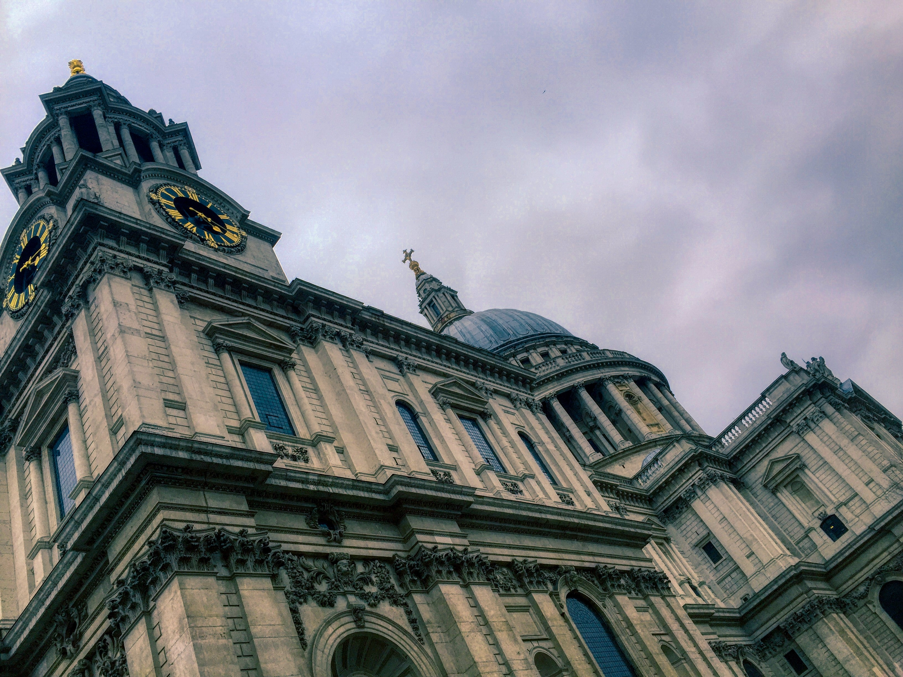

두 도시 이야기

최고의 시절이자 최악의 시절, 지혜의 시대이자 어리석음의 시대였다.
믿음의 세기이자 의심의 세기였으며, 빛의 계절이자 어둠의 계절이었다.
희망의 봄이면서 곧 절망의 겨울이었다.
우리 앞에는 모든 것이 있었지만 한편으로 아무것도 없었다.
우리는 모두 천국으로 향해 가고자 했지만 우리는 엉뚱한 방향으로 걸었다.
말하자면, 지금과 너무 흡사하게, 그 시절 목청 큰 권위자들 역시 좋든 나쁘든 간에 오직 극단적인 비교로만 그 시대를 규정하려고 했다.